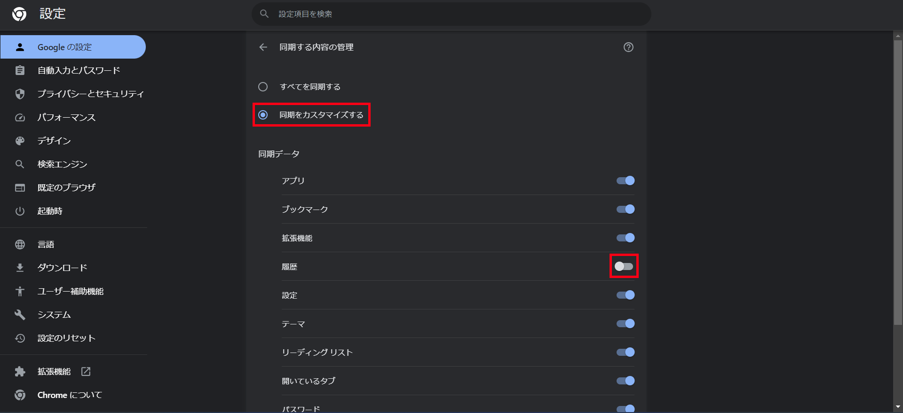
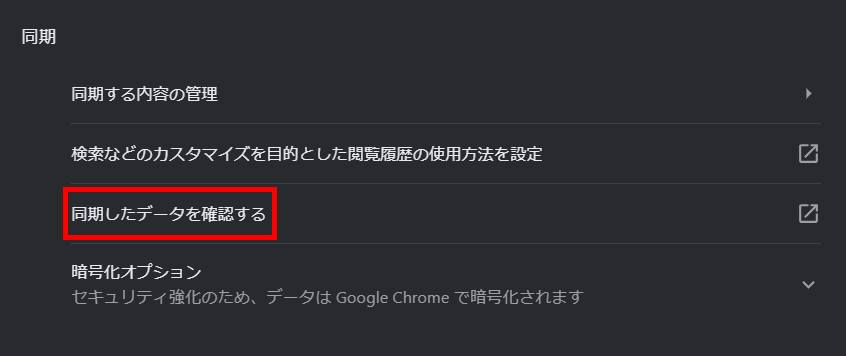
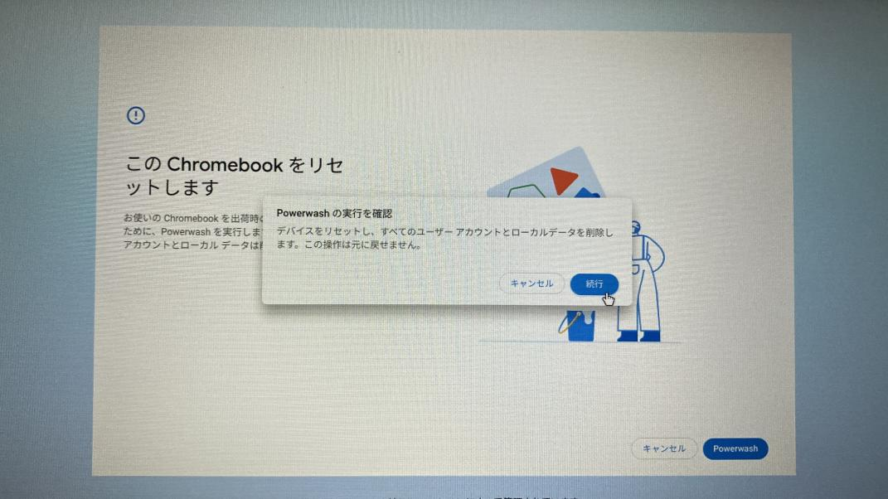
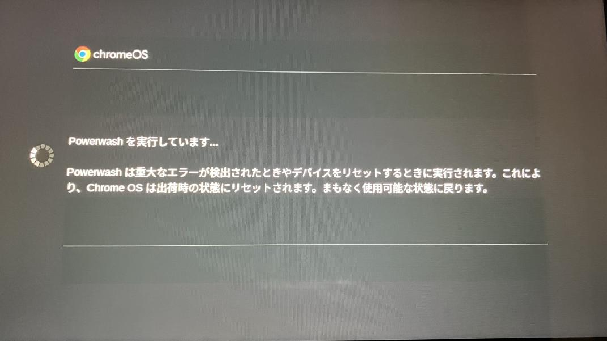

今回は履歴を削除する方法を見つけたので紹介していきます！
注: 今回、パワーウォッシュという操作が出てきます。学校でやるとログインできなくて詰むので絶対に家で行ってください。
また、必要なファイルはドライブに入れておいてください。
(重要なファイルは大抵最初からドライブに保存されているのでそこまで気にしなくてもいいです、消えるとしたら個人で追加した壁紙などです。)
ではまず、設定 (chrome://settings/) を開いてください。
そしたら 同期とGoogleサービス (アカウント名の下にあります) をクリック、 同期する内容の管理 を開いてください。
同期をカスタマイズする を選択し、 履歴をオフ にしてください。
そしたら 「←」 を押して戻って、今度は 同期したデータを確認する をクリックしてください。
そして一番下にある データの削除 をクリックして クリア してください。
ここまで来たら第一関門クリアです、次はパワーウォッシュをしていきます。
冒頭に書いた注意書きをもう一度読んでおいてくださいね
一度アカウントからログアウトしてください。
最初のログイン画面になったら Ctrl+Alt+Shift+R を長押し、再起動 をクリックして再起動が終わるまで待ってください。
再起動が終わるとこのような以下のような画面になるので「powerwash」をクリック
少し待ってください...
少し待つと 「始める」 というボタンが出てくるので、自分のwifiに接続します。
そして自分の学校のアカウントにログインします。
少し待って 企業の登録 が完了したらOK!
この後、いつもと同じログイン画面になるのでもう一度ログインします。
そして履歴を見てみると... 履歴が消えてます (おーまいがっち)
どうだったでしょうか。
パワーウォッシュは本来 Chromebook に問題が起きた時に行う動作なので頻繁にやることはおすすめしません。
履歴スパムと併用して貰えたらなと思います。